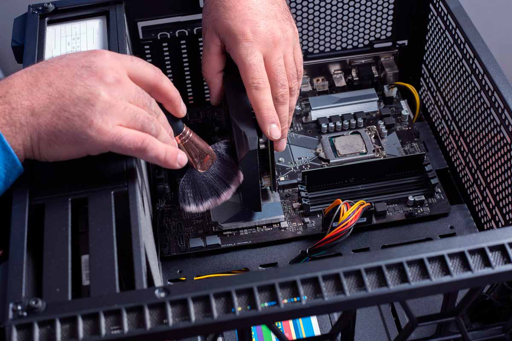

Problemas que podemos evaluar

Cuéntanos qué ocurre, cuándo comenzó y qué modelo de equipo tienes. La evaluación nos permite confirmar la causa y preparar una cotización adecuada.
- Computadoras lentas, bloqueos o errores de inicio.
- Actualización o reemplazo de almacenamiento SSD y memoria RAM.
- Problemas de temperatura, ventiladores y limpieza interna.
- Fallas de pantalla, teclado, batería.
- Instalación de Antivirus McAfee, Office permanente 2021 Perpetual .
- Instalación y configuración de software y sistema operativo.
- Revisión de componentes y diagnóstico de encendido.
Antes de entregar el equipo, respalda tus archivos importantes cuando sea posible. El tiempo, costo y disponibilidad de repuestos dependen del diagnóstico y del modelo.
Solicitar diagnóstico